Vanna Tat
In high school, I auditioned for a board position in the club Korean Connection. In this club, I particularly applied for the position of Dance Coordinator. I made up my mind to submit an application for the position after spending the duration of my freshman year in the club. The former board members of the club questioned me on a number of subjects during the interview, including how my skills would elevate the club beyond what it presently is and how my dedication to the club would drive it towards the future. It was the club I was most involved with during my freshman year, so my dedication to it was not insignificant. I really appreciated the environment and the folks I got to hang out with, from going to every single club meeting to going to all of the events. Thankfully, the board members saw my dedication and agreed to give me the role of dance coordinator. I remained in this position until the conclusion of my senior year. As a dance coordinator, I worked together with my two fellow dance coordinators to instruct and direct a large group of students in a performance known as a "Flashmob." More specifically, our group held a few practices each week during which we had to instruct the dance. The dance coordinators would have to design formations after a few months so that the performance would appear classy and well-planned. We drilled the performance repeatedly until everyone was prepared to take the stage. However, our duties went beyond merely instructing and formatting. Before each practice, we distributed reminders to make sure everyone would consistently show up for practice. Although it was acknowledged that preparation was essential, it was challenging to perfect the performance as a whole if certain performers were absent. In this case, there were many instances where a lot of the performers did not show for practice. Professionally, we had to announce that joining Flashmob is a commitment that everybody signed for and it would be unfair for those that do show up actually commit than for those who signed up saying they would commit do not actually commit. In this announcement, we added on that there would be consequences if this was repeated. Fortunately, it did not come to the point where we had to give out consequences. It is safe to say that we handled it professionally because once we made clear of out expectations, people were beginning to meet them. Since we did have to organize the performance, which was going to be in the assembly at the end of the year, we had to talk and organize with ASB and their coordinator about it was going to go about. Over the course of the school year, we were able to prepare everything that we were going to do and successfully perform it in front of the entire school. If I had the opportunity to do this again, I would. It was quite difficult but I know all the work was worth in the end.
In high school, I auditioned for a board position in the club Korean Connection. In this club, I particularly applied for the position of Dance Coordinator. I made up my mind to submit an application for the position after spending the duration of my freshman year in the club. The former board members of the club questioned me on a number of subjects during the interview, including how my skills would elevate the club beyond what it presently is and how my dedication to the club would drive it towards the future. It was the club I was most involved with during my freshman year, so my dedication to it was not insignificant. I really appreciated the environment and the folks I got to hang out with, from going to every single club meeting to going to all of the events. Thankfully, the board members saw my dedication and agreed to give me the role of dance coordinator. I remained in this position until the conclusion of my senior year. As a dance coordinator, I worked together with my two fellow dance coordinators to instruct and direct a large group of students in a performance known as a "Flashmob." More specifically, our group held a few practices each week during which we had to instruct the dance. The dance coordinators would have to design formations after a few months so that the performance would appear classy and well-planned. We drilled the performance repeatedly until everyone was prepared to take the stage. However, our duties went beyond merely instructing and formatting. Before each practice, we distributed reminders to make sure everyone would consistently show up for practice. Although it was acknowledged that preparation was essential, it was challenging to perfect the performance as a whole if certain performers were absent. In this case, there were many instances where a lot of the performers did not show for practice. Professionally, we had to announce that joining Flashmob is a commitment that everybody signed for and it would be unfair for those that do show up actually commit than for those who signed up saying they would commit do not actually commit. In this announcement, we added on that there would be consequences if this was repeated. Fortunately, it did not come to the point where we had to give out consequences. It is safe to say that we handled it professionally because once we made clear of out expectations, people were beginning to meet them. Since we did have to organize the performance, which was going to be in the assembly at the end of the year, we had to talk and organize with ASB and their coordinator about it was going to go about. Over the course of the school year, we were able to prepare everything that we were going to do and successfully perform it in front of the entire school. If I had the opportunity to do this again, I would. It was quite difficult but I know all the work was worth in the end.
I participated in a variety of volunteer activities while I was in high school, but performing duties for the Drama club stuck out to me the most. My role During my sophomore and junior years, I volunteered to assist with the annual haunted maze. During my sophomore year, I was given the minor, but significant, role of moving the maze's entrances back and forth. I repositioned the door once the attendees have entered so they can leave using the same entrance. During my junior year, I worked with a group of people to design and create the entire haunted maze, from the concept to the design to the construction and to the structure. Because we were still in a pandemic at the time of this maze, it had to be made outside. After each show, we had to take it down, to ensure nothing would happen in the middle of the night. However, during one of the nights it rained.It was unpleasant to put it back together after the rain, but we managed to get it done. I was so proud of myself that I decided to enroll in the class my senior year. I worked most of the shows throughout this academic year, with the exception of three, which is still a lot. I played a different role in each show. For the third year in a row, the haunted maze was my favorite production on which I ever worked. I had numerous roles in this program as well. I worked closely with a small group of individuals to create one room out of five that was appropriate for the theme. I had to work lighting during the week of the performance. The lighting made sure that the attendees wouldn't be able to see the scare actors in front of them. After a great deal of trial and error, we determined the ideal level of lighting. I was designated the tour leader when the show began. I had to go over a number of rules with the attendees before they entered the maze, such not using flash photography or touching the scare actors. I accompanied the participants through the maze from behind to make sure they were going in the right direction. There were other groups behind us, so walking behind them ensured they were moving consistently. This maze was thought to have by far the most visitors. It was so large that we needed to stop handing out "At The Door" tickets since it appeared as though it might never end. Even though working for the Drama club was demanding, I gained a lot of skills that I wouldn't have had access to in a different organization. I gained knowledge about creativity, teamwork, experimentation, failure, and perseverance. Without all of these, the club as a whole wouldn't have functioned well, and the department wouldn't have made as many achievements. My commitment increased significantly as I quickly achieved the status of 2 Star Thespian (those who put in over 200 hours in the theater) in a span of about a year.
Experience
Backstage Crew
• Designed sets and props for plays
• Experience with mixing sounds
• Worked over 200 hours in the theater
Dance Coordinator
• Taught and organized a performance for over 20 people
• Edited and mixed a variety of music
• Lead related dance performances outside of Flashmob
Volunteer
• Passed out Flyers to visitors
• Assisted as a helper for competitions
• Managed stands with their activities, such as wheel spinning
• Clean up crew for the 40 vendors
Education
UC Riverside
Portfolio
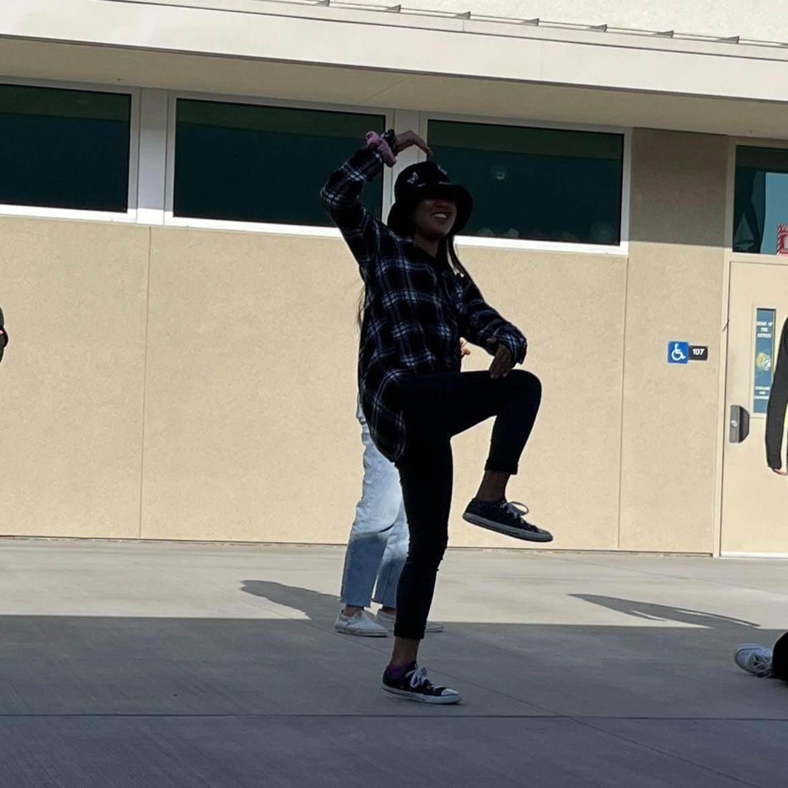
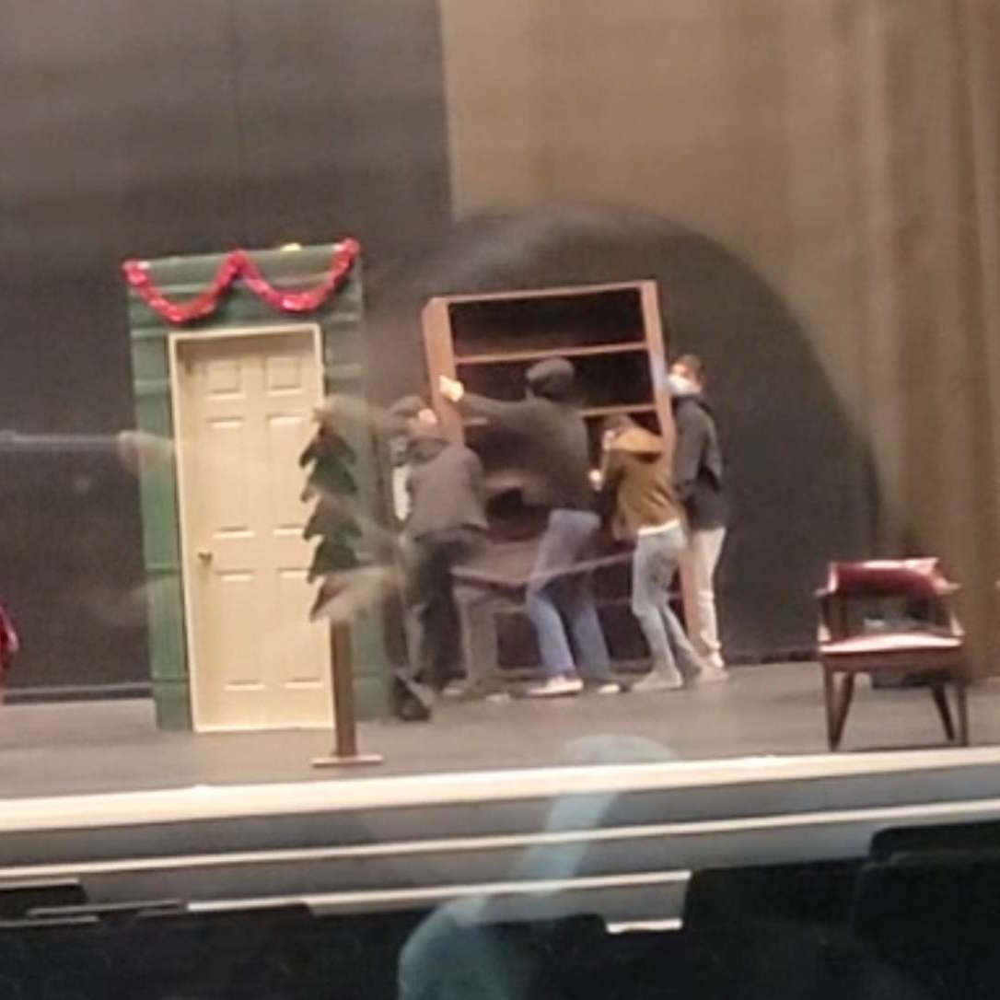
 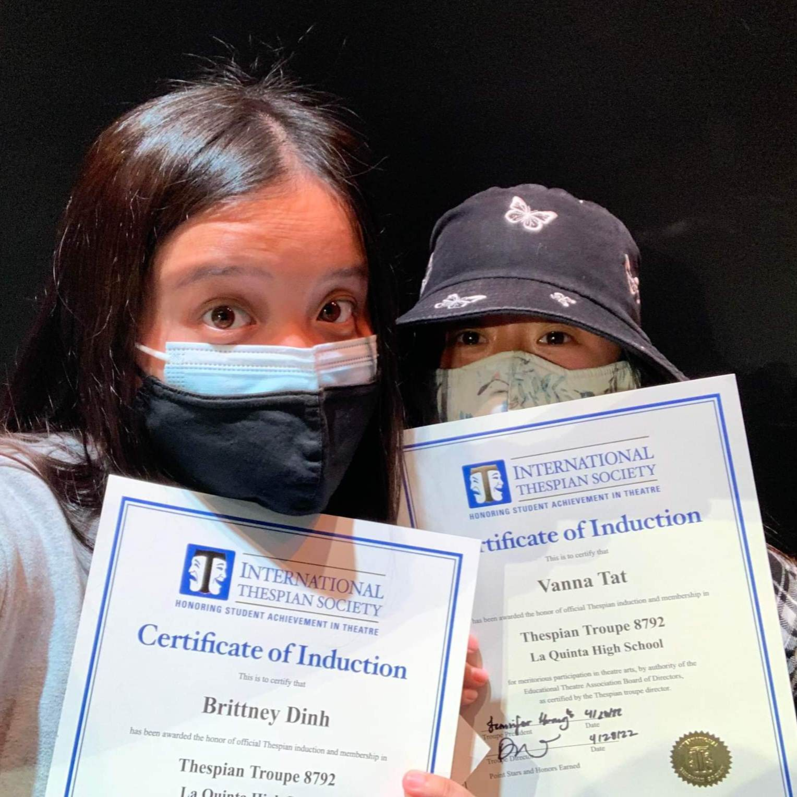
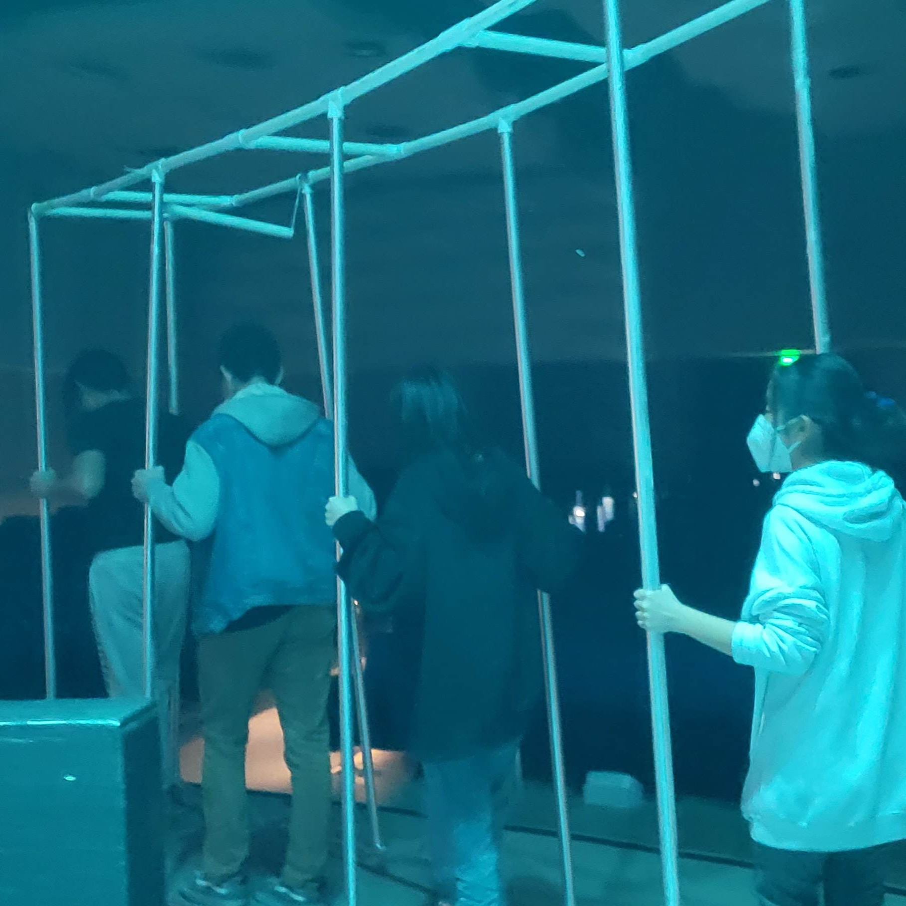
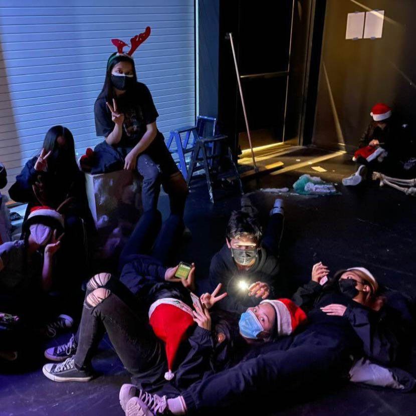
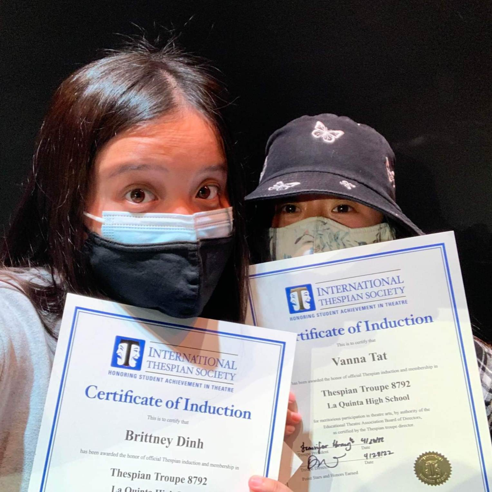
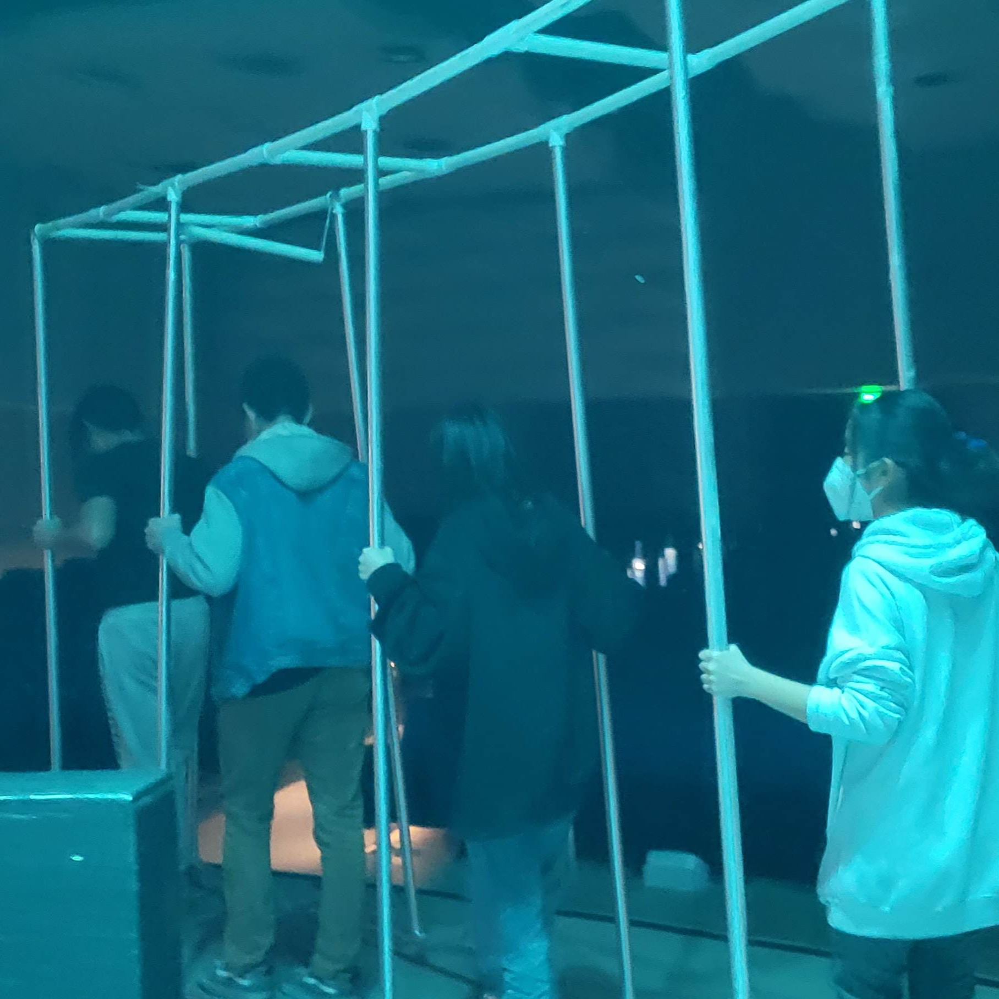
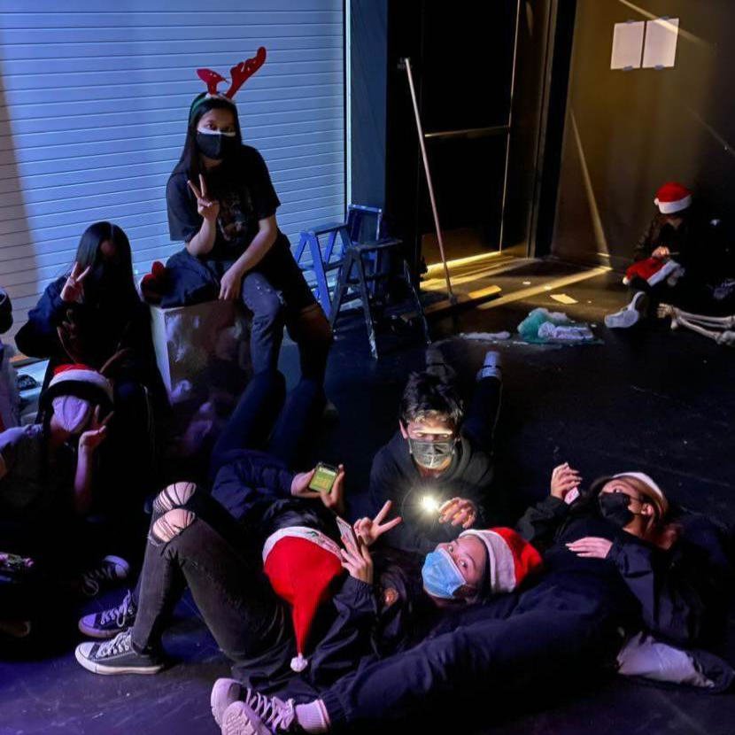
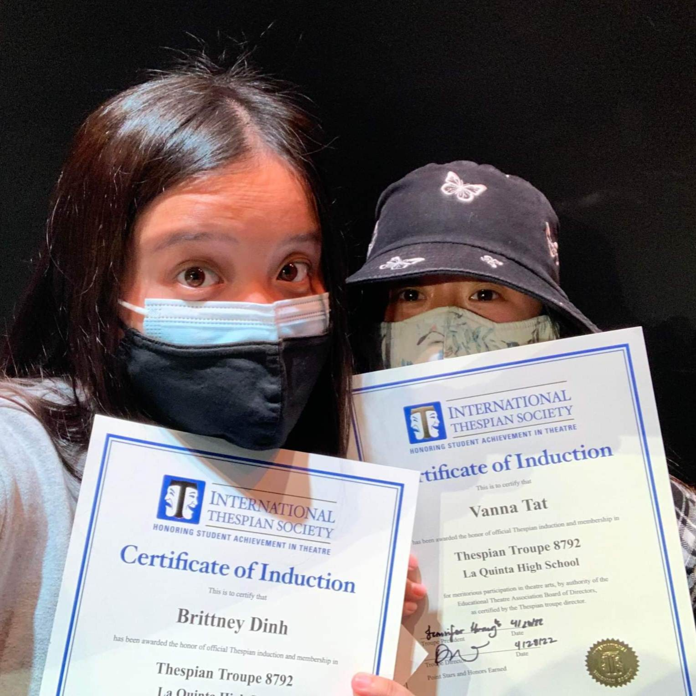
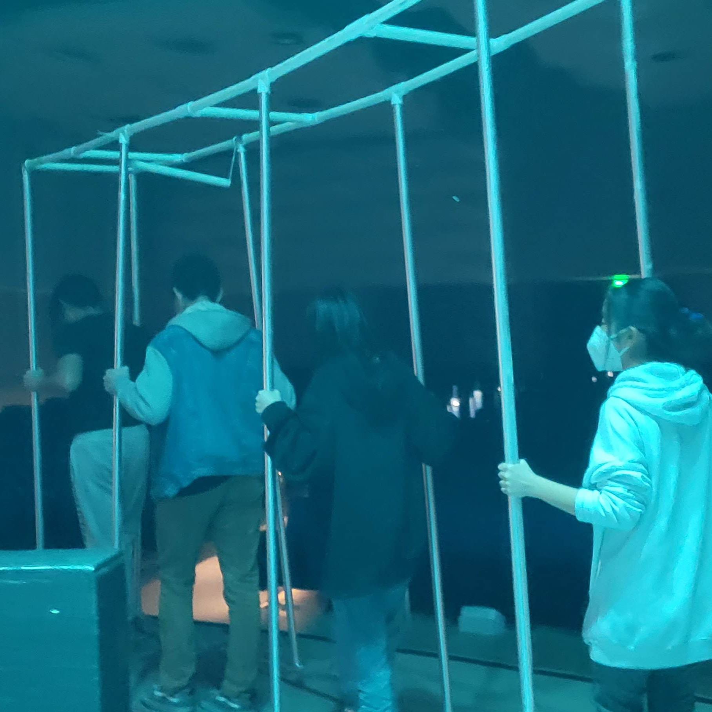
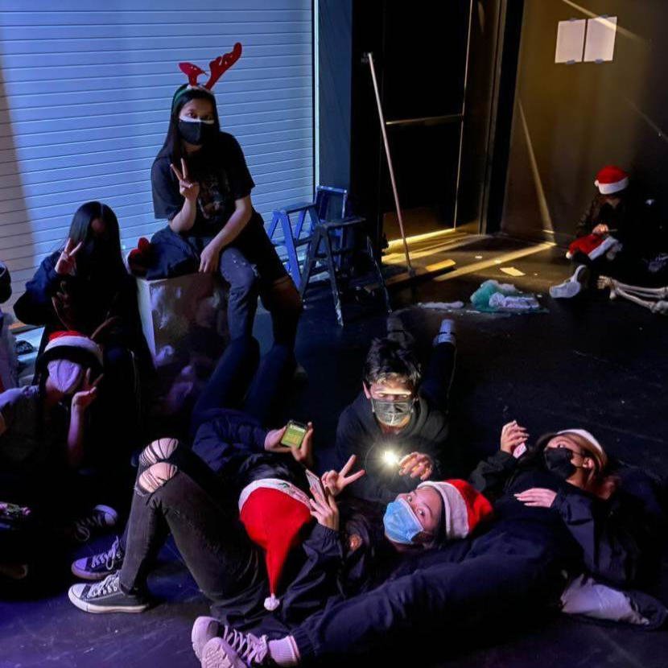